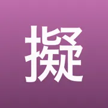
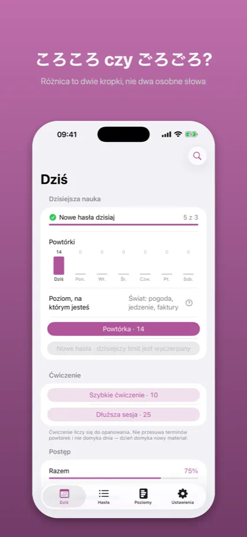
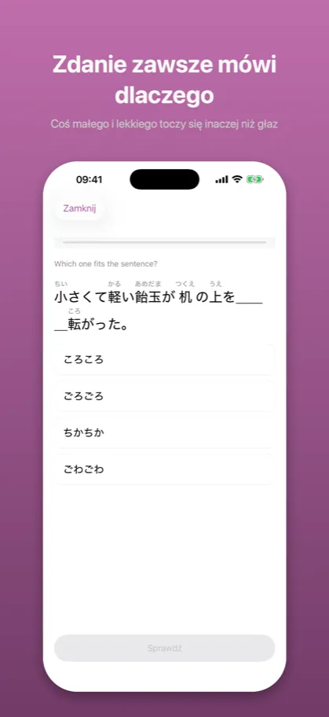
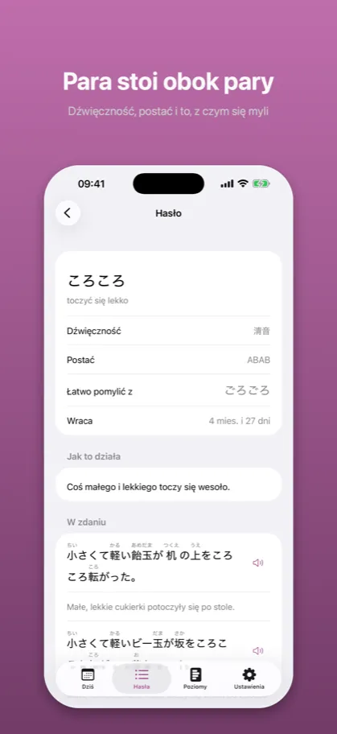

Onomatope: Dźwięki i wyrażeniaオノマトペ
Słówka z mangi i anime
App Store →Aplikacja darmowa, z zakupem w środku
Onomatopeje nie są losowe. 濁点 robi rzecz większą, cięższą i mniej przyjemną – kto to rozumie, zgadnie słowo, którego nigdy nie widział. Reszta uczy się trzystu słówek.
Jak to wygląda

Różnica to dwie kropki, nie dwa osobne słowa

Coś małego i lekkiego toczy się inaczej niż głaz

Dźwięczność, postać i to, z czym się myli
Opis ze sklepu
Trzysta onomatopei to nie jest lista do wykucia. To jest system, w którym dźwięk niesie
znaczenie – i po to jest ta aplikacja.
ころころ toczy się coś małego i lekkiego. ごろごろ – coś dużego i ciężkiego. Różnica to dwie
kropki, a nie dwa osobne słowa do zapamiętania. さらさら jest gładkie, ざらざら szorstkie.
ぱらぱら lekkie, ばらばら rozsypane. Kto zrozumie, co robi 濁点, zgadnie słowo, którego nigdy
nie widział – a tego nie da żaden słownik.
CZTERY RZECZY, MIERZONE OSOBNO
Dobór do zdania. Które z czterech podobnych brzmień pasuje tutaj. Zdanie zawsze mówi
dlaczego – coś małego i lekkiego toczy się inaczej niż głaz.
Znaczenie. Co hasło znaczy samo z siebie. Zawsze od brzmienia do znaczenia, nigdy odwrotnie:
bez zdania cztery podobne brzmienia nie mają jednej odpowiedzi.
Postać i wpięcie. AっBり jest nagłe i zakończone, ABAB trwa. I jak słowo wchodzi w zdanie:
〜と, 〜する, 〜だ・の.
Reguła dźwięku. Co 濁点 robi ze słowem. Mierzone wyłącznie na materiale bez drabiny powtórek,
więc mówi, czy zgadniesz słowo, którego nigdy nie widziałeś.
PARA, NIE ŚREDNIA
Aplikacja nie mówi „ごろごろ 44%". Mówi: stawiasz ごろごろ tam, gdzie ma być ころころ – ale nie
odwrotnie. Kierunek pomyłki jest w tej nauce całą informacją, a średnia go ukrywa.
PIĘĆ POZIOMÓW, NIE JLPT
Ciało i samopoczucie. Pary dźwięczne. Postacie 〜り i 〜っと. Emocje i ludzie. Świat: pogoda,
jedzenie, faktury, manga. ぺこぺこ słychać pierwszego dnia, a nie ma go w żadnej liście N5 –
więc poziomy są praktyczne, nie egzaminacyjne. Dwa pierwsze są darmowe w całości.
CO WRACA, A CO NIE
Hasła wracają terminem, bo są faktami, a fakty blakną: nic w brzmieniu ぐっすり nie mówi, że
chodzi o sen, a nie o błoto. Reguły tak nie wracają – 濁点 działa niezależnie od tego, czy ktoś
ci o nim przypomniał. Reguły się nie zapomina, tylko się jej nie stosuje, a to widać po
błędach, nie po kalendarzu.
CZEGO TU NIE MA
Nie ma wpisywania z klawiatury: mierzymy wybór między czterema brzmieniami, nie sprawność
kciuka. Nie ma pytania, czy słowo pisze się ドキドキ czy どきどき – manga pisze katakaną
wszystko, więc takie pytanie ma dwie poprawne odpowiedzi. Nie ma kont, reklam ani subskrypcji.
Nie ma połączenia z siecią: aplikacja działa w całości na telefonie.
JEDEN ZAKUP
Poziomy 1 i 2 są darmowe w całości – to nie jest hojność, tylko warunek sensowności: wersja
darmowa ma być krótsza, a nie udawana. Reszta to jeden zakup, bez odnawiania.
Powyższy opis jest tym samym tekstem, który stoi na karcie aplikacji w App Store – pochodzi z tego samego pliku.
Częste pytania
Czego uczy Onomatope?
Trzysta onomatopei to nie jest lista do wykucia. To jest system, w którym dźwięk niesie
znaczenie – i po to jest ta aplikacja.
ころころ toczy się coś małego i lekkiego. ごろごろ – coś dużego i ciężkiego. Różnica to dwie
kropki, a nie dwa osobne słowa do zapamiętania. さらさら jest gładkie, ざらざら szorstkie.
ぱらぱら lekkie, ばらばら rozsypane. Kto zrozumie, co robi 濁点, zgadnie słowo, którego nigdy
nie widział – a tego nie da żaden słownik.
Ile kosztuje Onomatope?
Poziomy 1 i 2 są darmowe w całości – to nie jest hojność, tylko warunek sensowności: wersja
darmowa ma być krótsza, a nie udawana. Reszta to jeden zakup, bez odnawiania.
Czego ta aplikacja nie robi?
Nie ma wpisywania z klawiatury: mierzymy wybór między czterema brzmieniami, nie sprawność
kciuka. Nie ma pytania, czy słowo pisze się ドキドキ czy どきどき – manga pisze katakaną
wszystko, więc takie pytanie ma dwie poprawne odpowiedzi. Nie ma kont, reklam ani subskrypcji.
Nie ma połączenia z siecią: aplikacja działa w całości na telefonie.
Dokumenty
Pozostałe aplikacje
- Kaname: Gramatyka japońska — Powtórki JLPT: N5 N4 N3 N2 N1
- Bunmyaku: Japoński w zdaniu — Słówka, kanji i furigana
- Katsuyokei: Odmiana japońska — Czasowniki, formy, fiszki
- Joshi: Partykuły japońskie — Gramatyka i ćwiczenia JLPT
- Kazoekata: Liczniki japońskie — Liczenie, kanji, ćwiczenia
- Kuzushi: Mowa potoczna — Anime, dorama i skróty
- Shindan: Poziom japońskiego — Test JLPT: N5 N4 N3 N2 N1
- Keigo: Grzeczność japońska — Japoński formalny do pracy
- Kifuku: Akcent japoński — Wymowa, intonacja, słuchanie